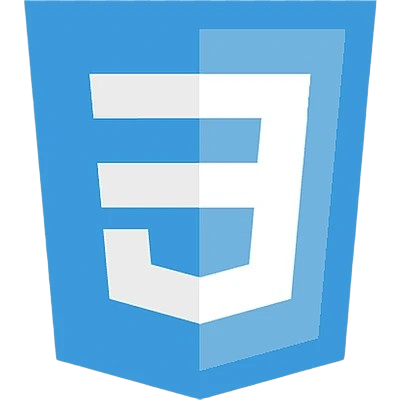
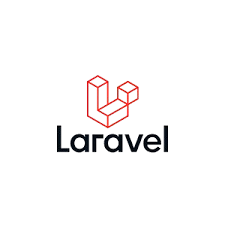
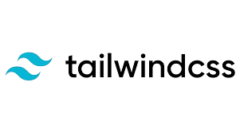
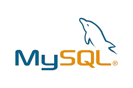
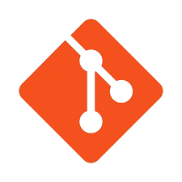

Hi Welcome to my portf!
Latif Ardiansyah
Saya adalah Web Developer dengan pengalaman dalam membangun aplikasi web responsif menggunakan HTML, CSS, JavaScript, PHP, serta framework seperti Laravel, React.js, dan CodeIgniter. Fokus saya adalah menciptakan sistem yang user-friendly, efisien, dan selalu mengikuti tren teknologi.





Unduh CV